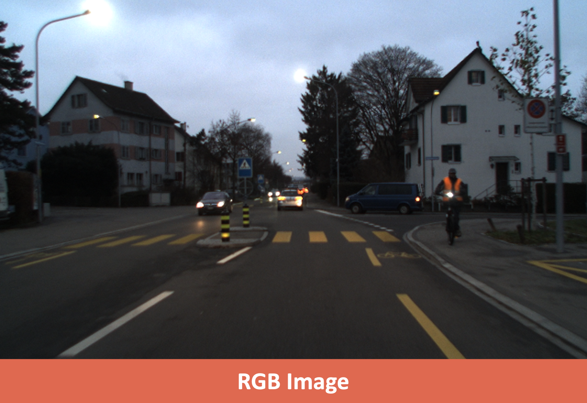
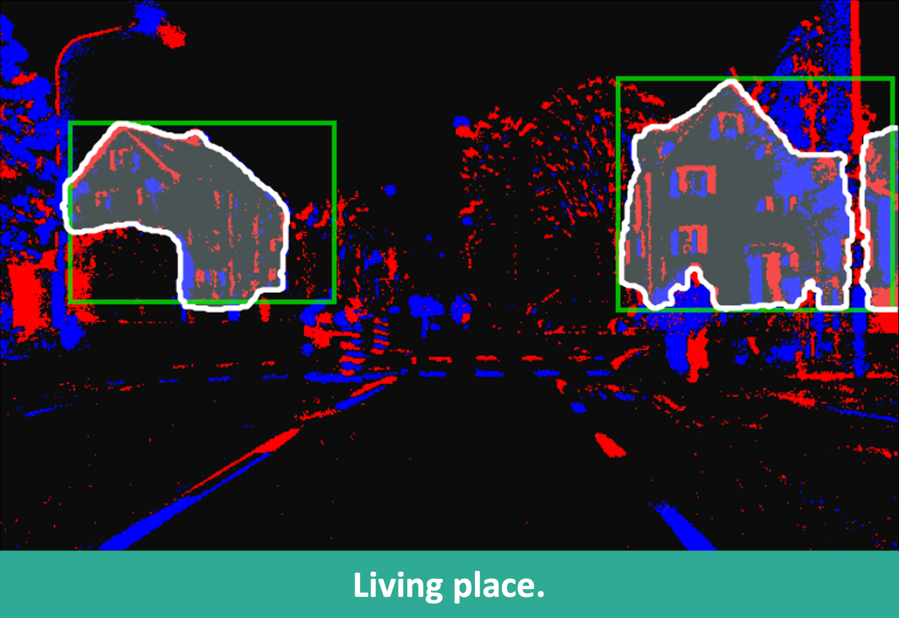
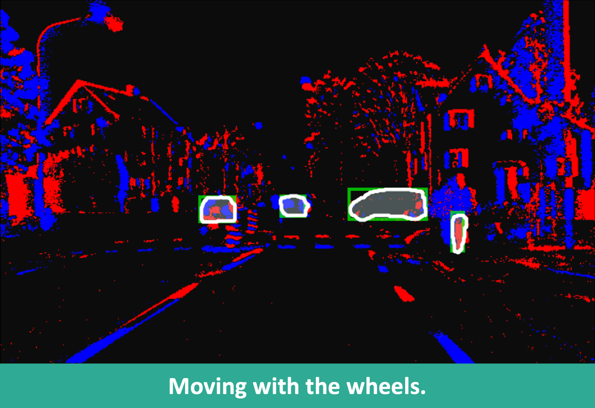
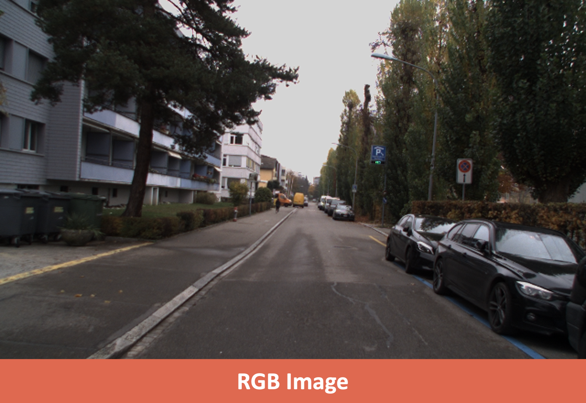
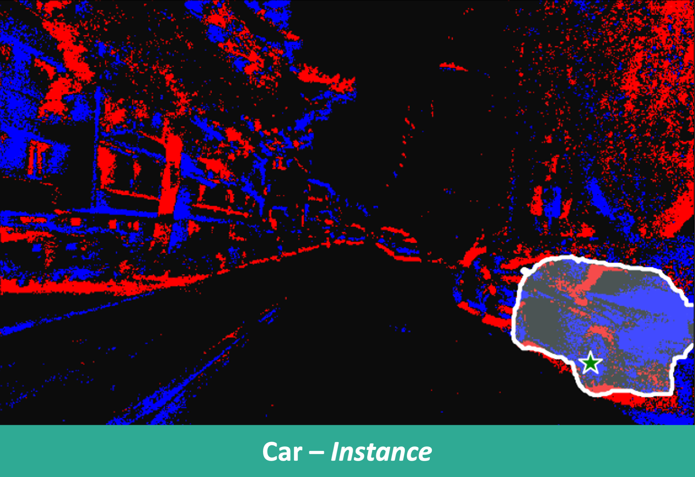
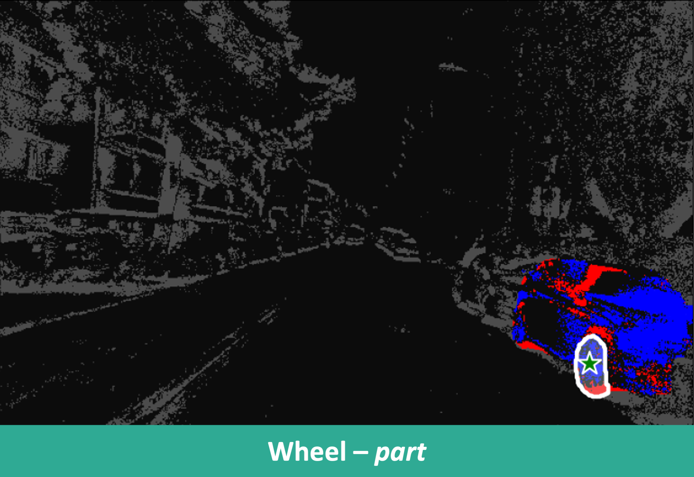

SEAL is the first Semantic-aware Segment Any Events model!



Given the box prompts, our SEAL output both instance-level mask and open-vocabulary semantics.



Given a point prompt, our SEAL recognizes and classifies both instance-level and part-level masks.
Class-agnostic object detection
I wanna drive.
Walking in the sidewalk.
Based on our SEAL, we further propose SEAL++ that supports 1) prompt-free, 2) spatiotemporal, Open-Vocabulary Events Instance Segmentation (OV-EIS). Left video shows the class-agnostic detection from SEAL++. Two videos on the right present the spatiotemporal OV-EIS.
Scene 1.
Scene 2.